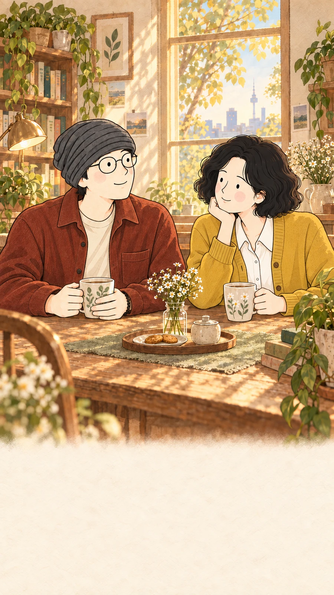
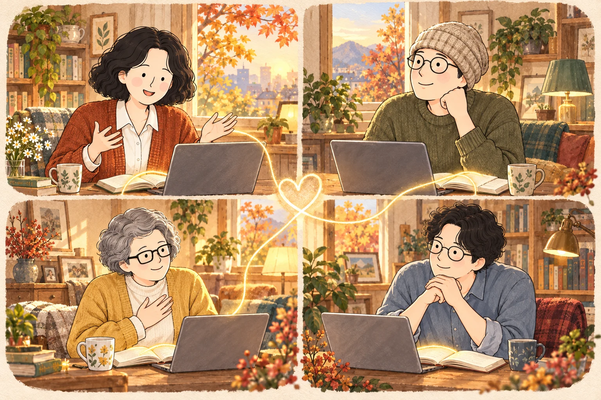
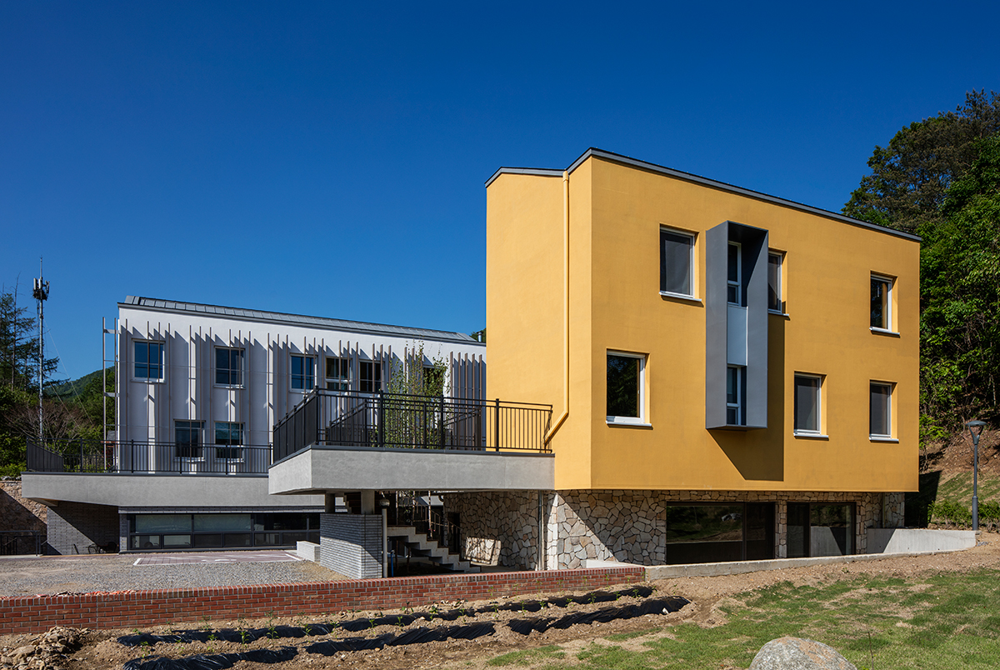
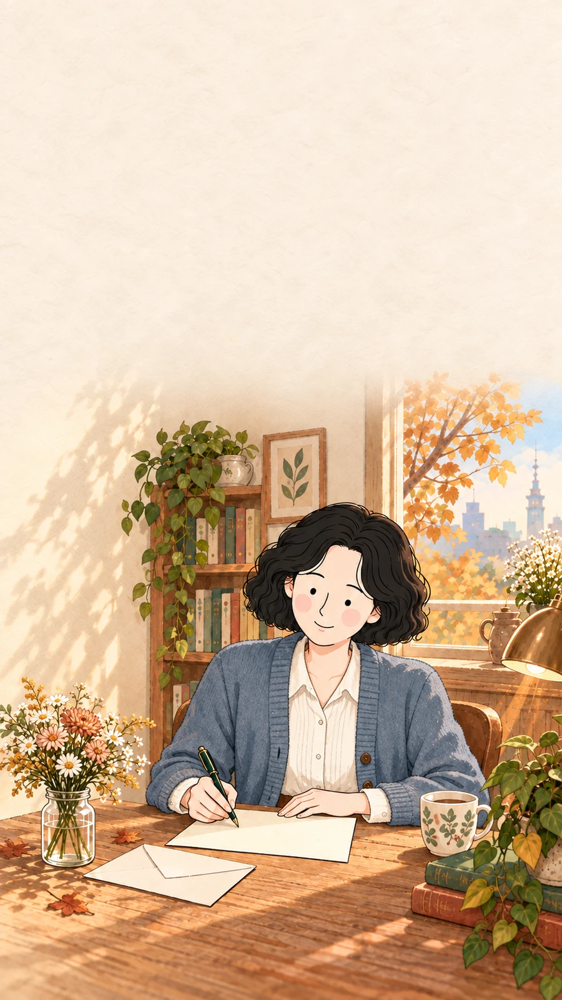
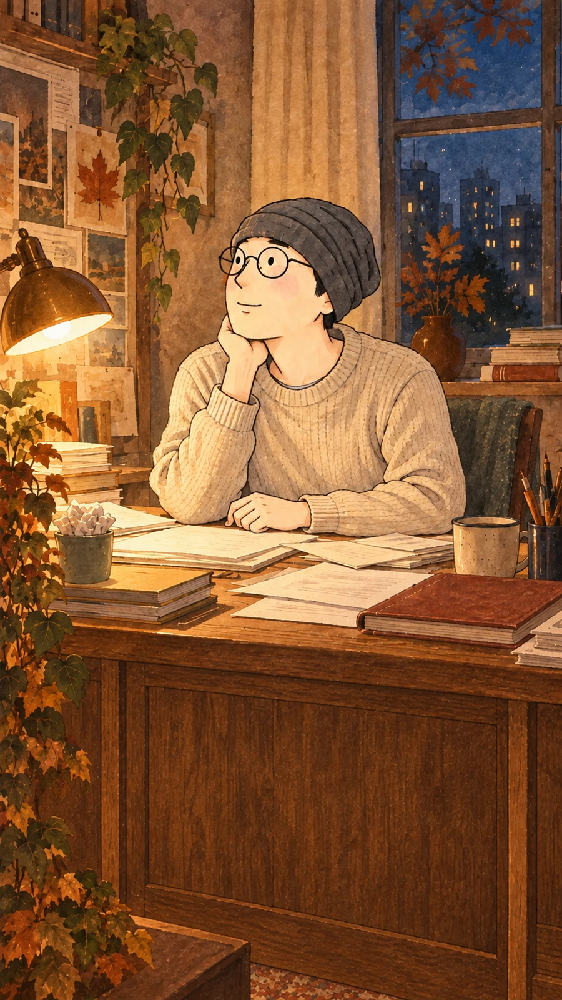

인사하고, 함께 읽습니다.
짧게 안부를 나눈 뒤 한 문단씩 돌아가며 읽습니다. 준비된 발표나 발제문은 필요하지 않습니다.
A BOOK. A VOICE. A CONNECTION.
평일 새벽 여섯 시, 한 문단씩 소리 내어 읽고
그 문장이 닿은 삶의 이야기를 나눕니다.
미리 읽지 않아도, 낭독이 처음이어도 괜찮습니다.

WHEN평일 06:00–07:00
WHERE온라인 · Zoom
HOW30분 낭독 + 30분 대화
SINCE2024년 2월부터
01 / ABOUT US
한 권의 책을 사이에 두고,
서로의 삶에
조금 더 가까이.
모두의 새벽 + 낭만북클럽은 한 시즌에 한 권씩, 평일 아침 Zoom에서 만나 소리 내어 읽는 모임입니다. 심리와 관계를 탐구하는 책부터 소설과 드라마 대본집까지, 여러 책을 함께 읽어 왔습니다.
30분을 읽고 나면, 마음에 남은 문장과 각자의 경험을 나눕니다. 같은 장면이 누군가에게는 위로가 되고, 다른 누군가에게는 오래 잊었던 질문을 꺼내기도 합니다. 서로의 목소리를 통해 혼자서는 만나지 못했던 읽기가 시작됩니다.
지평의 글 · 왜 ‘낭독 + 모임’을 계속 하는가? ↗02 / ONE HOUR AT DAWN
처음 오시는 분도 첫날부터 함께 읽으실 수 있습니다.

짧게 안부를 나눈 뒤 한 문단씩 돌아가며 읽습니다. 준비된 발표나 발제문은 필요하지 않습니다.
마음에 머문 장면, 내 삶과 겹쳐진 순간을 나눕니다. 서로 다르게 느낀 이야기에 귀를 기울입니다.
함께 읽은 문장과 들은 이야기를 품고 일상으로 돌아갑니다.
03 / OUR STORY
2024년 첫 새벽에서, 열여덟 번째 만남으로.

게슈탈트 하일렌 체험집단에서 만난 사람들이 온라인으로 다시 모였습니다. 집단을 이끌어 주신 김정규 교수님의 『이해받는 것은 모욕이다』로 첫 낭독을 시작했습니다.
농담님이 대구모두심리상담센터를 열고, 지평도 대구에 내려와 인커리G 사무실을 오픈했습니다. 낭독모임에도 이름을 붙여, 새로운 마음으로 낭독을 이어 갔습니다.
그동안 17권의 책을 함께 읽어 왔고, 이번 시즌에는 다시 김정규 교수님의 책 『뉴런하우스』를 펼칩니다. 함께 책을 읽으며 간접적으로 게슈탈트 하일렌에서 집단상담에 참여한 것 같은 체험을 해 보셨으면 좋겠습니다.
04 / OUR BOOKSHELF
최신 시즌부터 차례로 놓았습니다. 책등을 눌러 기록과 안내를 살펴보세요.
책의 두께는 낭독일 수에 비례합니다.
가장 짧은 18일 · 가장 긴 60일
시즌 17은 낭독 27일, 시즌 18은 낭독 21일 계획 기준입니다.
『원청』은 2026년 9–10월에 함께 읽습니다. 11월에는 열여덟 번째 책 『뉴런하우스』를 펼칠 예정입니다.
05 / YOUR HOSTS
책을 고르고, 자리를 열고, 서로의 이야기가 이어지도록 돕습니다.


VOICES FROM OUR MORNINGS
“못 일어나도 괜찮다
듣기만 해도 괜찮다
언제든어떤 모습이든 괜찮다”
“낭청
밝은 낭, 들을 청
친구들의 밝은 목소리를 듣는 시간”
시즌 17 회고 설문 · 2026년 10월 · 공개에 동의한 답변이며, 일부 오탈자를 다듬었습니다.
07 / FIRST VISIT
아니요. 그날 읽을 부분을 모임에서 한 문단씩 함께 읽습니다. 첫날에는 책과 Zoom에 접속할 기기만 준비해 주세요. 책을 끝까지 읽어 오거나 발제문을 작성하실 필요는 없습니다.
괜찮습니다. 전문 지식이나 낭독 경험을 전제로 하지 않습니다. 잘 읽는 것보다 같은 문장을 함께 지나가는 데 의미를 둡니다. 읽는 동안 마음에 남은 장면에서 이야기를 시작하시면 됩니다.
가능한 날 꾸준히 함께해 주시면 좋습니다. 다만 늦잠을 자거나 사정이 생겨 빠지는 날이 있어도 괜찮습니다. 다시 오신 날의 낭독부터 함께하시면 됩니다. 읽은 범위는 시즌의 진행 기록에서 확인하실 수 있습니다.
모임에서는 별칭과 수평어를 사용합니다. 수평어는 친절하고 다정한 반말로, 직함과 나이에 따른 위계를 잠시 내려놓기 위한 시도입니다. 존댓말이 편하시면 그대로 사용하셔도 괜찮습니다. 별칭 대신 본명을 쓰셔도 됩니다.
OUR NEXT CHAPTER · SEASON 18
김정규 지음 · 너에게 말하기
11월 2일–11월 30일 · 21번의 만남
평일 오전 6–7시 · Zoom · 참가비 10만원